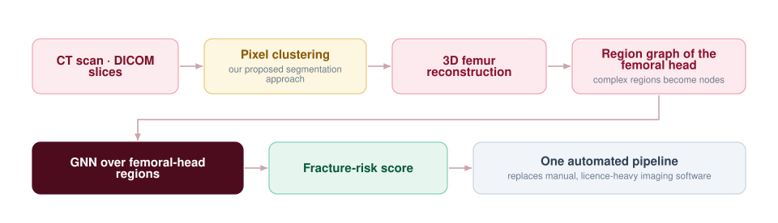

Automating 3D Femur Reconstruction for Fracture-Risk Analysis
3D reconstruction of the femur is one of the central tasks of bone biomechanics, and it is currently done with imaging software that is expensive and demands a rigorous specialist skill set. This work automates the full reconstruction process on a single platform and applies graph neural networks to the complex regions of the femoral head.

The problem with the current workflow
A good number of image-processing packages are used for pathological analysis. They demand a rigorous skill set and the licence cost is high, which puts routine biomechanical analysis out of reach for a lot of clinical and research settings. The 3D reconstruction of the femur — the step everything downstream depends on — is the most manual part of it.
Pixel clustering for segmentation
Our proposed approach clusters pixels across the DICOM stack to isolate bone from surrounding tissue, producing a clean femur surface without hand-tuned thresholds per scan. Stacking the segmented slices gives the 3D shape directly, and the whole process runs on a single platform in Python.
Where the GNN comes in
The femoral head is geometrically complex, and that complexity is precisely what carries fracture-risk information. Representing its regions as a graph lets a graph neural network reason about the relationships between them — how regions neighbour and support one another — rather than treating each voxel independently.
Status
Initial results are promising. This work was presented by me at CMBBE 2021 (Computer Methods in Biomechanics and Biomedical Engineering); the presentation and abstract are below.